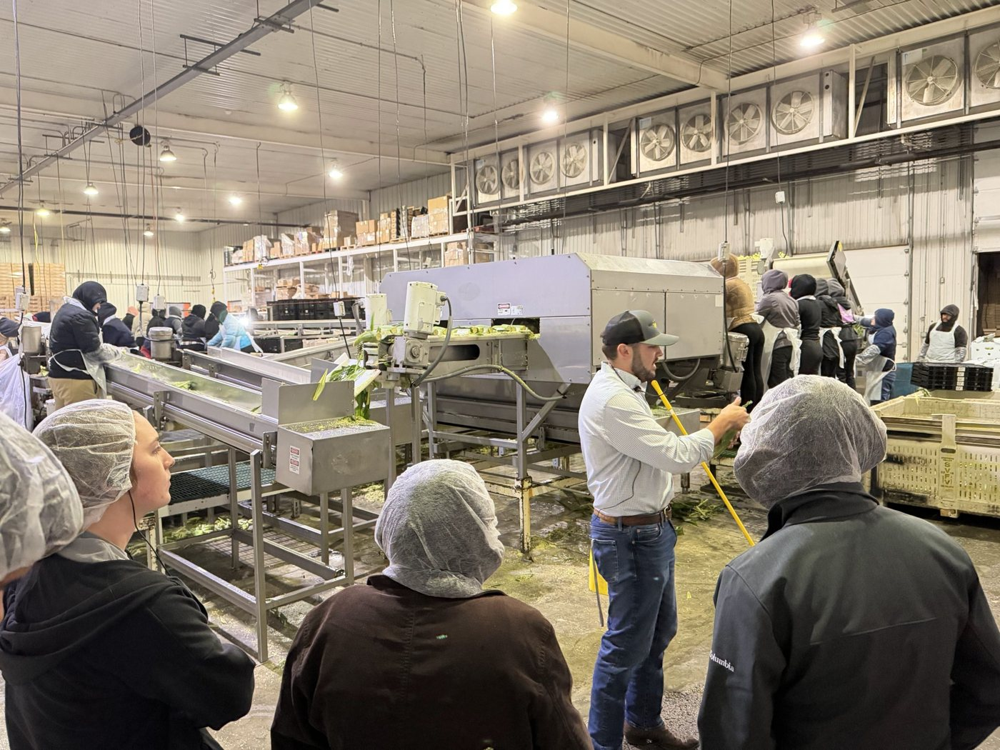
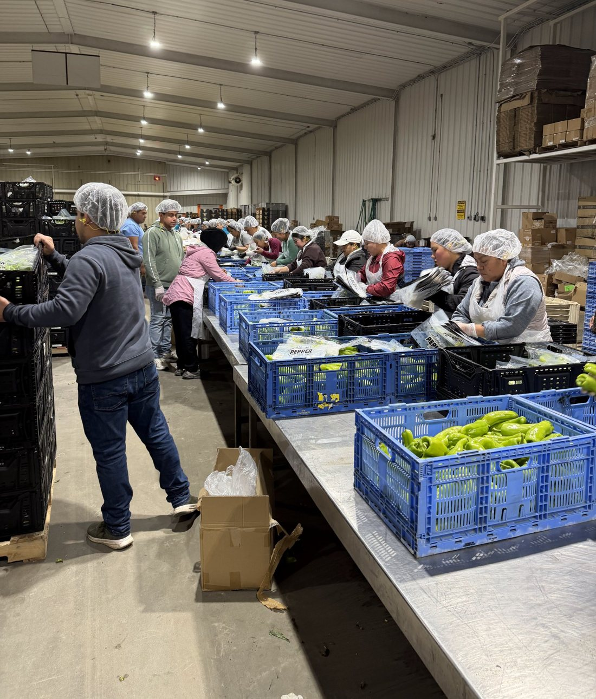
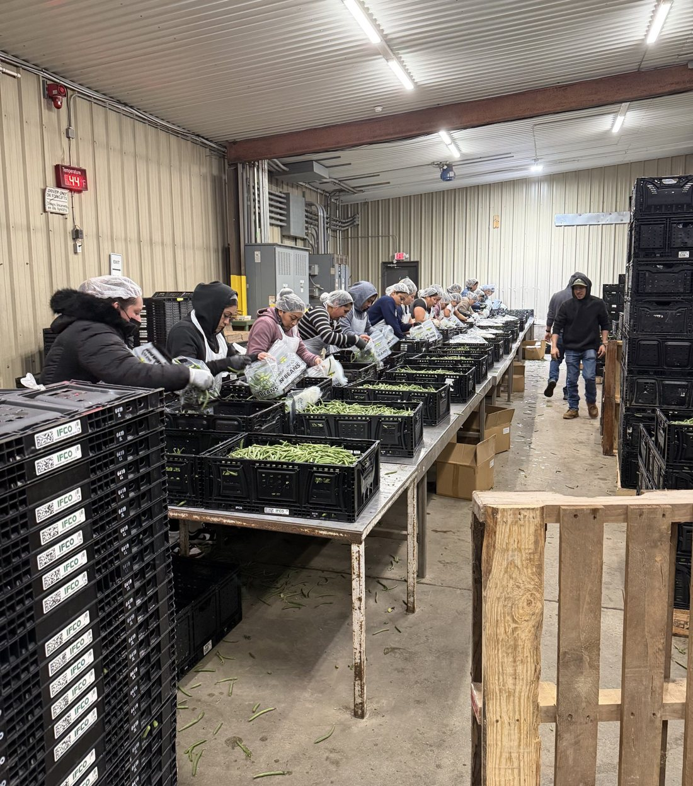
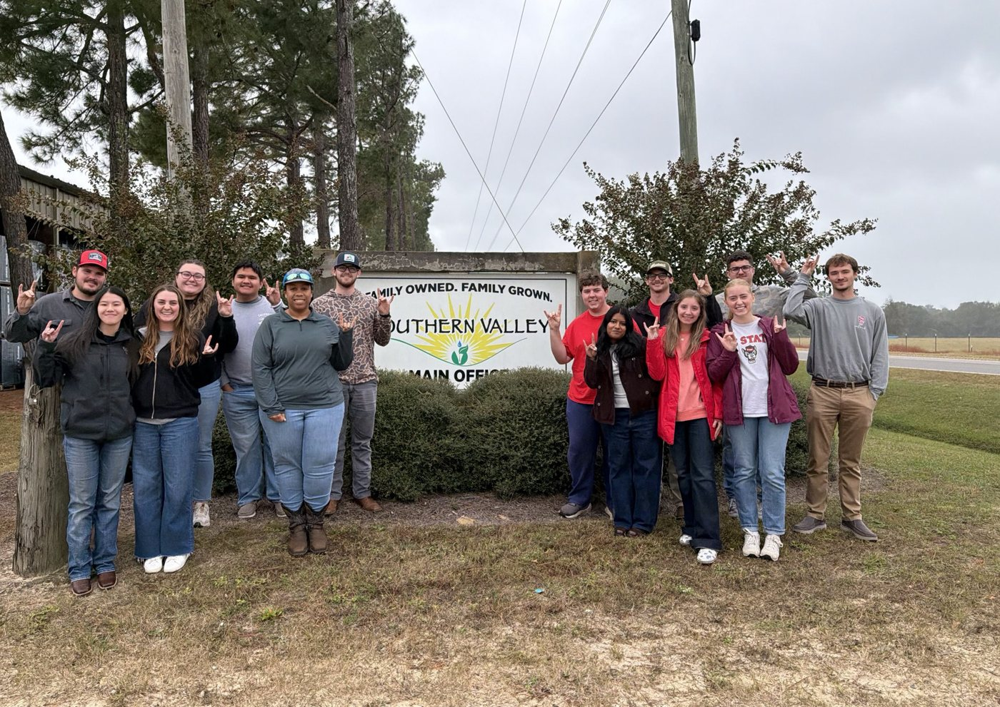
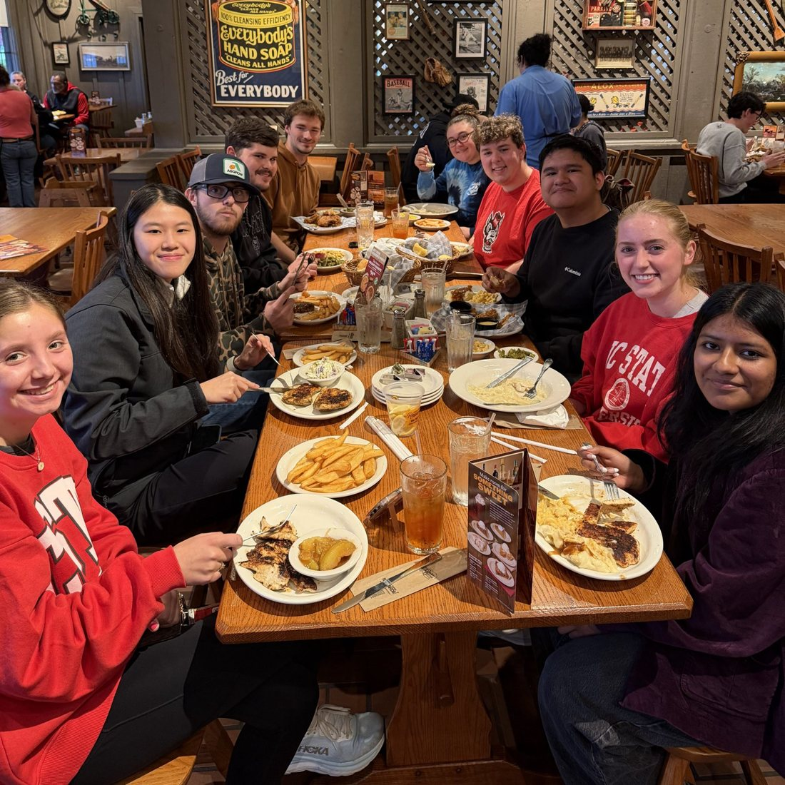
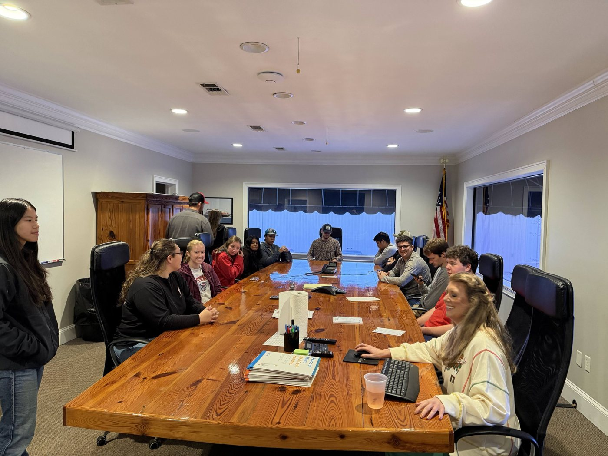
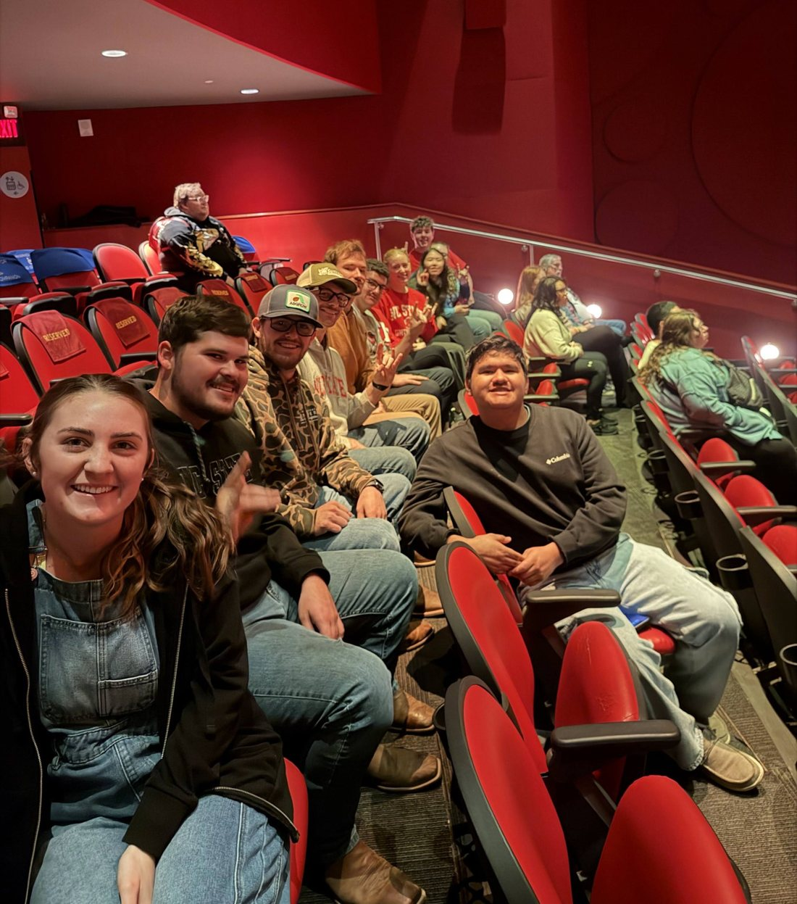

These are some of the biggest farm businesses in the country. Dr. Michael Best took 14 ABM students to see them up close. Three days, four cities, and a lot of hairnets.
The trip left Raleigh on Thursday, Nov. 19. Each stop is one of the largest businesses of its kind in the United States.
“I learned more in those three days than I ever could have hoped to learn in a classroom.”
Seth Thompson · ABM freshman
Citrus, in Georgia

Georgia is not a state most people connect with citrus. Corbett Brothers Farms grows it anyway, alongside the peppers, eggplant, and squash on its sign.
What surprised Dr. Best was the citrus fruit and the scale of operations. This is a family farm, and it is very large.
Twenty vegetables, one cold chain
Southern Valley Fruit & Vegetable sells more produce to Walmart than any other operation in the U.S., Dr. Best says.
Students put on hairnets and walked the floor. They saw produce chilled with hydrocoolers and ammonia cooling systems minutes after it came in from the field.
The hard part is inventory. With 20 products moving at once, the oldest box has to leave first, every time. Students saw how the company keeps that straight.
Josh Sutton noticed how the packers are paid. There are no quotas. People earn more by packing more, and some have worked there for decades.




“I was surprised by how much hands-on labor goes into the production process. Touring the production and packaging plants also gave me a greater appreciation and respect for the immigrant workers who play an important role in the industry.”
Seth Thompson · ABM freshman
“Just because a farm produces a lot does not mean it has to have a massive processing facility or a lot of workers. It has to be efficient to run smoothly.”
Jenai Doak · ABM student, on what surprised her
Peanuts without hands
Premium Peanut is the largest peanut shelling operation in the United States. The farmers who grow the peanuts own the company.
Almost nothing is done by hand. Machines shell the peanuts and machines sort them, start to finish.
“This visit has helped me realize what I can learn from the American agriculture industry that I may be able to implement in the Indonesian industry in the future.”
Shannon Purnama · ABM and Biological Sciences
“Ag business isn’t just farming and riding a tractor. It’s farm logistics, sales, marketing, legal and contracts, hiring workers, payroll, and so much more.”
Josh Sutton · ABM student
Every Coke there is
On the way home the group stopped at World of Coca-Cola, where you can taste sodas from all over the world.
That includes ones you can't buy anymore. Students tried New Coke and Tab.
“By that point, everyone had gotten to know each other, and we were able to relax, talk, and have a good time together,” Seth Thompson said.

“Just go.”
“I went on this trip knowing only one other student out of the 15. By the time I got home 3 days later, I had gotten 15 new numbers on my phone, 15 new connections on LinkedIn, and 15 new followers on Instagram.”
“Seeing things firsthand makes a huge difference, and the friendships I made along the way are an added bonus. I would definitely encourage anyone to take the opportunity. It was definitely an experience everyone should have in college.”
“If you are on the fence about going on a trip just go. It is a great way to get to know your peers and professors. You also get to see the inner workings of agriculture and you get to ask a lot of questions about how things work.”
“The car rides were very long, and we got to talk with everyone during them. I came away with friends that I likely wouldn’t have otherwise because of this trip.”
The B-sides



